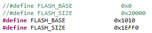
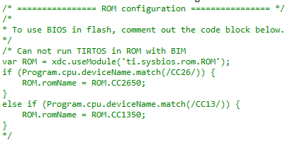
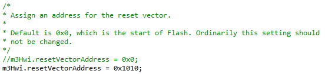

Congratulations on choosing the CC1350 Wireless MCU and LaunchPad ecosystem! This example will show you how to build/compile your own images for use with the BLE OAD service using Code Composer Studio.
Before starting on this tutorial you need to download and install Code Composer Studio 6.1.3 or later.



a. Clone or copy the OAD conversion script at ti-simplelink Github
b. install pythonc. install crcmod:
d. install intelhex:
To see all available resources associated with the CC1350, click on this link to filter out all the incompatible projects and collateral.
Available in resource explorer are code examples using TI-RTOS CC13xx/CC26xx SDK, documentation, Software Developers Guide and links to wiki articles and more. Feel free to navigate the available resources to jump-start your development.